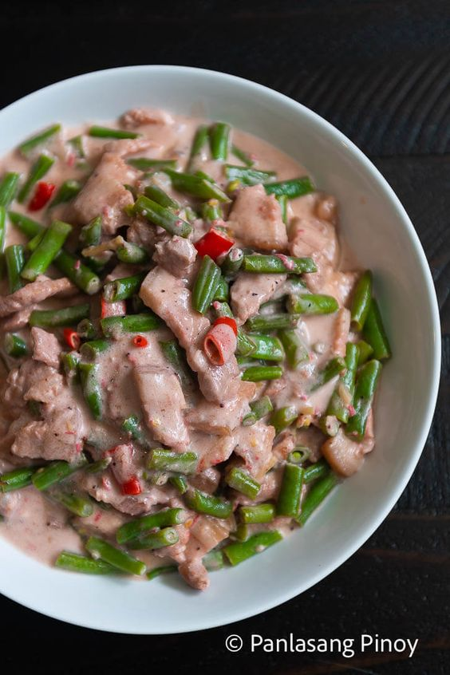

"Bicol Express: A Fiery Adventure Through Filipino Cuisine"
Ingredients:
- 500g pork belly, thinly sliced
- 2 cups coconut milk
- 4 cloves garlic, minced
- 1 onion, chopped
- 2-3 pieces red chili peppers (siling labuyo), chopped (adjust according to preferred spice level)
- 1 thumb-sized ginger, julienned
- 2 tablespoons shrimp paste (bagoong)
- 1 tablespoon cooking oil
- Salt, to taste
- Ground black pepper, to taste
Procedure:
-
Prepare the Pork Belly: Heat cooking oil in a large pan over medium heat. Add the thinly sliced pork belly and cook until lightly browned and crispy. Remove the pork from the pan and set aside.
-
Sauté Aromatics: In the same pan, sauté the minced garlic, chopped onion, and julienned ginger until fragrant and translucent.
-
Incorporate Shrimp Paste: Add the shrimp paste (bagoong) to the pan and cook for another minute, stirring continuously to distribute the flavors evenly.
-
Add Coconut Milk: Pour the coconut milk into the pan and stir to combine with the aromatics and shrimp paste. Bring the mixture to a gentle simmer.
-
Simmer Pork: Return the cooked pork belly to the pan, stirring to coat it with the coconut milk mixture. Let the pork simmer in the coconut milk for about 15-20 minutes, or until it becomes tender and absorbs the flavors of the sauce.
-
Add Chili Peppers: Add the chopped red chili peppers to the pan, adjusting the quantity according to your preferred level of spiciness. Stir well to incorporate the chili peppers into the sauce.
-
Season to Taste: Taste the Bicol Express and season with salt and ground black pepper as needed. Remember that shrimp paste is already salty, so adjust the seasoning accordingly.
-
Serve Hot: Once the pork is tender and the sauce has thickened to your liking, remove the pan from the heat. Transfer the Bicol Express to a serving dish and serve hot with steamed rice.